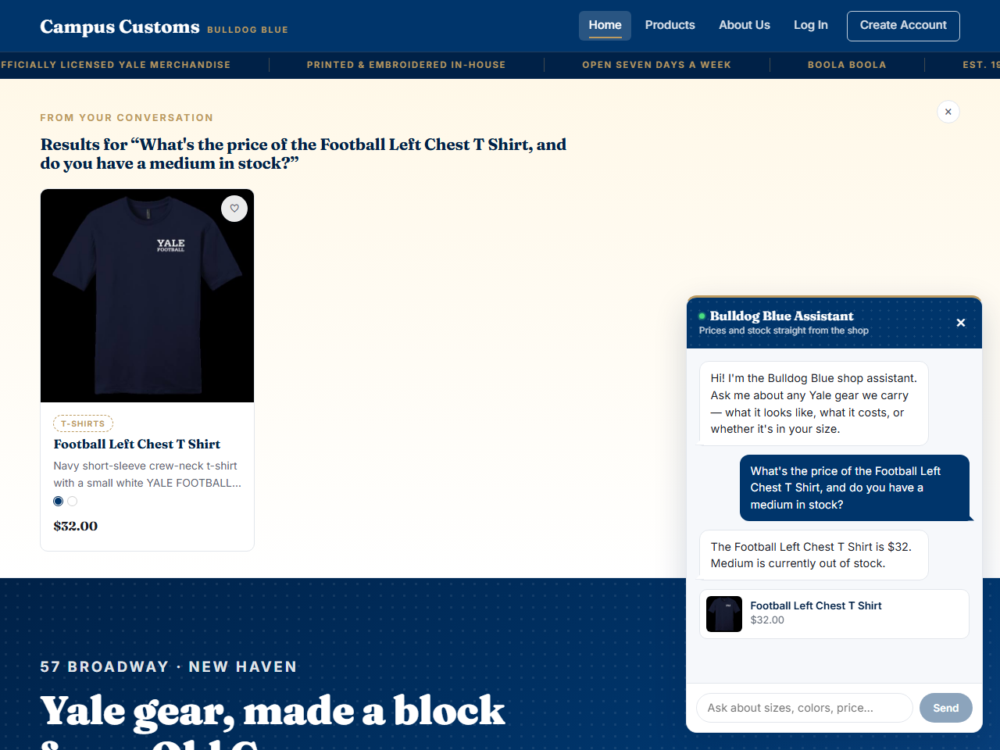
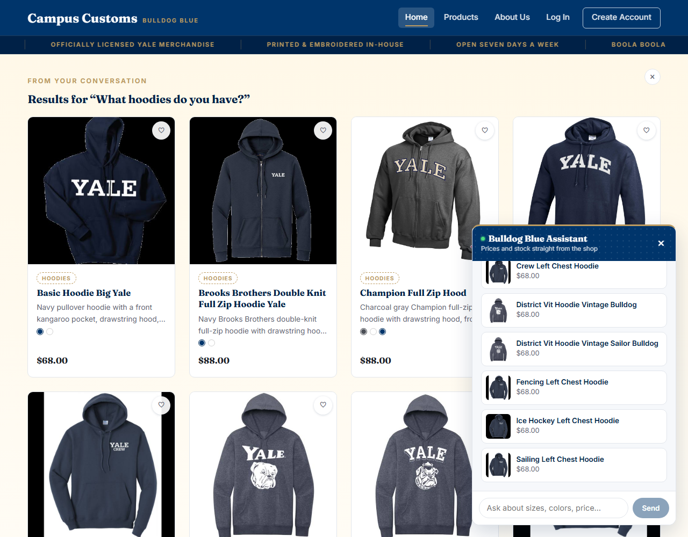
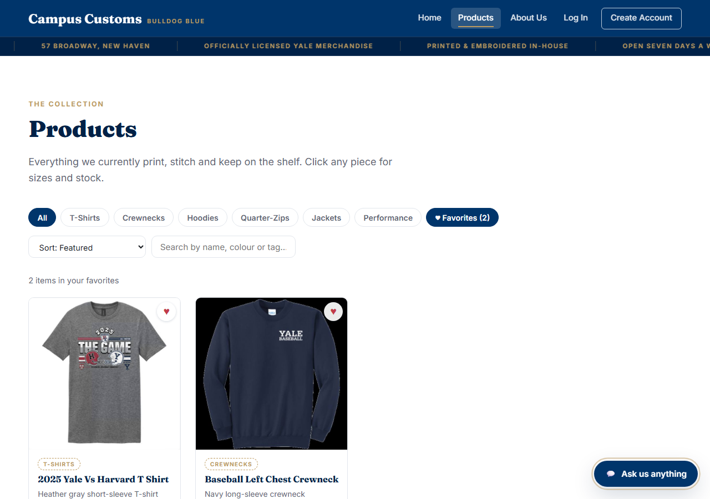

1 Chat gives honest stock & price from the database
Proves: the agent answers from a live database lookup, not a guess

Asked the shop assistant: "What's the price of the Football Left Chest T Shirt, and do you have a medium in stock?" It replied: "The Football Left Chest T Shirt is $32. Medium is currently out of stock." That's a real, non-trivial answer — a product that is for sale but happens to be sold out in one specific size — meaning the agent checked the actual inventory row for that size rather than giving a generic "yes, in stock" answer.
campus_customs.db):
catalogue.price = 32.0, inventory.quantity = 0 for
(product_id='football-left-chest-t-shirt', size='M'). Both numbers in the reply match exactly.
2 A category question dynamically populates product cards
Proves: the agent's structured matches render live on the page, not only inside the chat bubble

Asked: "What hoodies do you have?" A "Results for “What hoodies do you have?”" banner appeared on the page itself — not just inside the chat panel — holding real product cards (image, name, price, color swatches) for every hoodie the agent found. The chat reply lists the same products the cards show, confirming the agent's structured output is what actually drove what appeared on the page.
MAX_SEARCH_RESULTS = 10 in backend/tools.py); every product shown (Basic Hoodie Big
Yale, Brooks Brothers Double Knit, Champion Full Zip Hood, …) is a real row in the catalogue table
with category Hoodies.
3 Usability feature (Problem 9) — Favorites filter
Proves: the saved-items wishlist actually narrows the catalogue to what was hearted

Hearted two products on the Products page (2025 Yale Vs Harvard T Shirt and Baseball Left Chest Crewneck), then clicked the "♥ Favorites (2)" chip. The grid narrowed from all 102 products down to exactly those two, and the result count reads "2 items in your favorites." This is the no-account-needed wishlist from Problem 9 — saved in the browser, nothing sent to the backend for it.
localStorage["campus-customs-favorites"] back out and filtering the same product list the
Products page already fetched — no server round-trip, confirmed in src/favorites.tsx /
src/pages/Products.tsx.